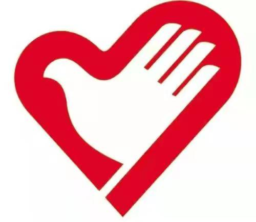

践行志愿精神，收获奉献快乐

各位同学下午好，感谢大家来参加中学生志愿者招募会。
不知道同学们有没有参加过志愿活动，是否知道什么是志愿精神？是否懂得参加志愿活动意味着什么？我想当你们真正报名参加志愿活动，你就会找到问题的答案了。今天我想和大家分享一下我对志愿服务的认识，在其中我们可以找到最大的快乐。
我身边有很多同学通过志愿活动为社会做了贡献。这个学年，学校设立了国家图书馆、科技馆、天文馆、园博园这些志愿活动场所供大家选择。场馆内的岗位不同，工作内容不同，但大家不管在哪里做志愿者，都可以开阔视野、增长才干，既能温暖自己，又能奉献社会。
首先，参加志愿活动有助于我们开阔视野。我曾经参加过中国科技馆的志愿服务。在我服务工作的休息之余，有时会在场馆中参观，能学到很多课内没有涉及到的知识。比如，科技馆二楼的电与磁展厅中的科技实验就使我大开眼界，学到了很多新鲜有趣的知识，很多次都刷新了我的认知，体会到科技的魅力。我的朋友小然同学曾经做过天文馆的志愿讲解员。他在写讲解稿时能够接触到许多从未见过的故事、理论和知识点，在讲解服务的同时，自己的天文学知识也快速增长。我们还有机会参加国家图书馆的志愿服务。国家图书馆是藏书的宝库，可以阅读的书籍有很多。在国图做志愿者，就会有更多的机会遨游在知识的海洋中，使我们受益无穷。
此外，参加志愿服务还有助于增长才干。在服务中，我们将有机会发挥潜能——以前从未得到过开发和利用的能量与才能。因为对于一个志愿者的要求也许与我们熟悉的日常学习的要求有很大的不同，这就使得我们身上的某一部分能量得以释放。小然同学在向参观者讲解时极大地锻炼了他的表达能力，不仅端正了身板，说话也变得敞亮，表达更加自然。他的工作得到了参观者的好评。我通过做志愿者，锻炼了自己在突发事件来临时解决问题的能力。如果没有这个志愿机会，也许我的这部分能力就不会被激活。我们收获的这些新的才能与协调技巧无疑将帮助我们更有效地处理问题，并为建立一种融洽的人际关系铺平道路。
最重要的，参加志愿服务使我们有机会奉献社会，尽一份公民的责任和义务。我们中学生都是利用课余时间做志愿服务的，在活动中，我们既服务于他人，也赢得了别人的尊重。我在做科技馆服务时，只要参观者向我问询，我会毫不犹豫地为他们解答。记得曾经有一位外地的小同学在场馆内和班级走散了，找不到带队老师，不知道如何是好。当时我恰巧在场馆内，得知情况后立即与场馆工作人员取得联系，及时帮他找到了带队老师。当这些受到我帮助的人向我投来赞许或感谢目光的时候，我会把这种赞扬转化为一种对待岗位更加认真负责的动力，去更加真诚的服务于他人。我觉得我收获的不仅是一句谢谢、一个微笑，我更会将志愿经历结合到自身生活的思考与剖析。作为一名新时代的首都中学生，参与志愿服务是我心之所向，情之所往。每一次的经历，都让我体会到奉献的快乐。
高尔基在《海燕》中曾经说过，“如果你在任何时候，任何地方，留给人们的都是些美好的东西……你就会感到所有的人都需要你，这种感觉使你成为一个心灵丰富的人。你要知道，给永远比拿愉快。”同学们，人生的意义在于奉献。它既表现为在国家和人民需要的关键时刻挺身而出，也表现在我们日常的学习和生活中。我们只有不断为他人、集体、国家和社会做出贡献，人生才更光彩，自身价值才能更好地实现。奉献是一种真诚自愿的付出行为，是一种崇高的精神境界，是人生的美好追求，而这一切你都可以在志愿服务中实现。相信我们都会以最饱满的精气神和最精湛的服务擦亮志愿者这个“金名片”。